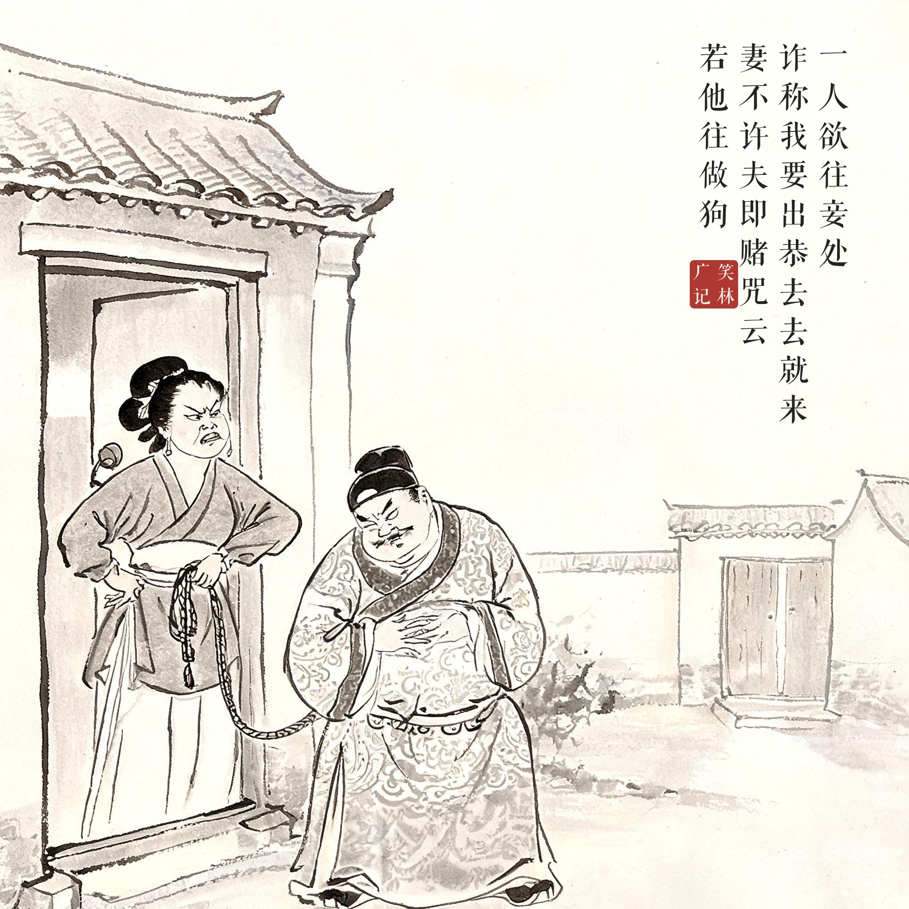
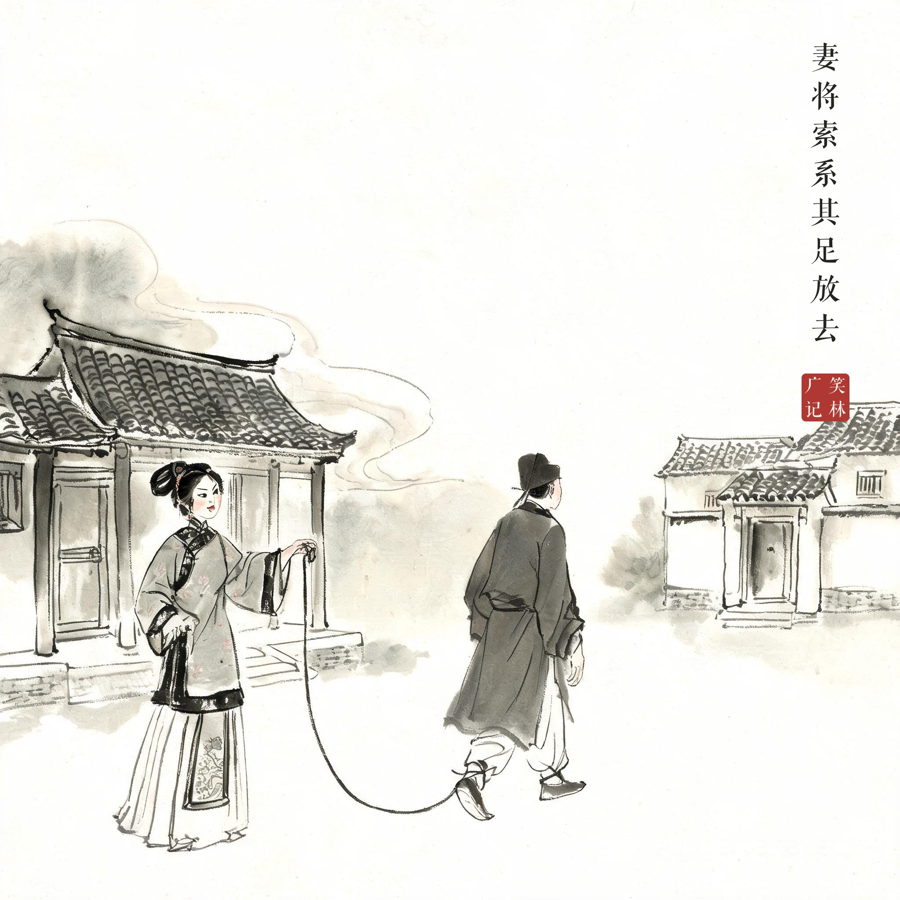
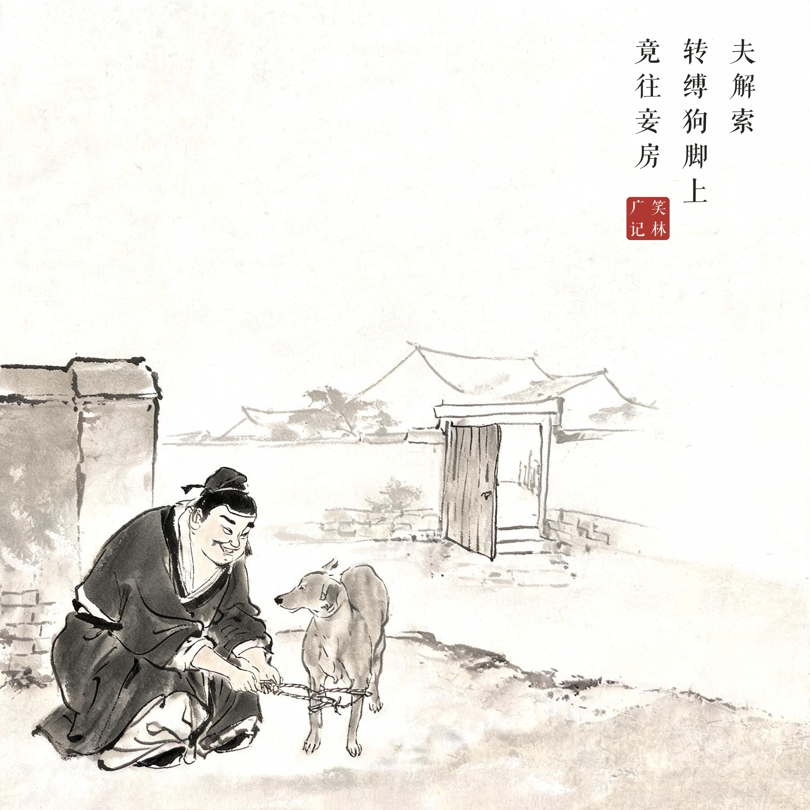
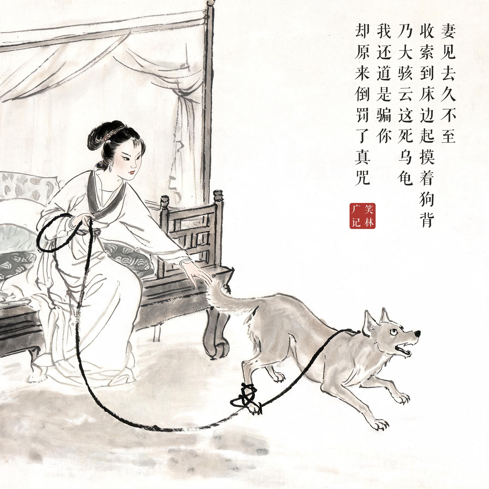

《笑林广记 · 闺风部》（[清]游戏主人纂集）
一人欲往妾处，诈称："我要出恭，去去就来。"妻不许，夫即赌咒云："若他往做狗。"妻将索系其足放去。夫解索，转缚狗脚上，竟往妾房。妻见去久不至，收索到床边，起摸着狗背，乃大骇云："这死乌龟，我还道是骗我，却原来倒罚了真咒。"
丈夫想去妾那儿，谎称："我去趟厕所，马上回来。"妻子不放心，丈夫就赌咒："我要是去了那边，就变做狗！"妻子拿根长绳拴住他的脚，放他出去。丈夫解下绳子，转而拴到狗腿上，径直去了妾房。妻子等了半天不见人回来，收绳到床边一摸——摸着一条狗背，大骇道："你这死乌龟，我还以为你是骗我，没想到咒还真应验了！"
赌咒一时爽：绳子那头换成狗的瞬间，"若他往做狗"从玩笑变成了神迹——圆谎的最高境界是让物理世界配合演出。